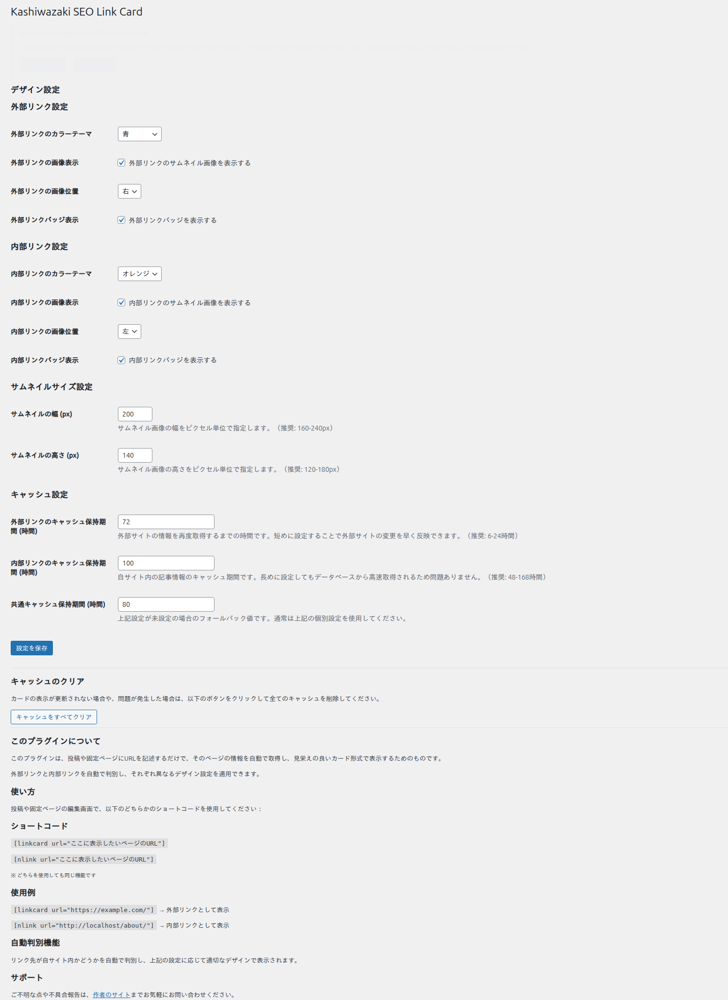
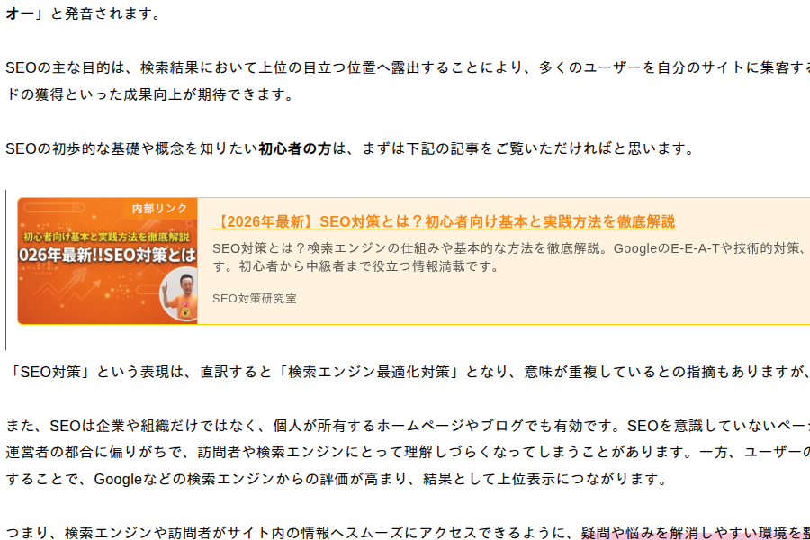

リンクカードの使い方
Kashiwazaki SEO Link Card のリンクカード表示、クリック解析、デザインカスタマイズの各機能について詳しく説明します。
リンクカード表示
リンクカードは、URLからOGP（Open Graph Protocol）情報を自動取得し、タイトル・説明文・サムネイル画像を含むリッチなカード形式で表示します。

フロントエンド表示例

リンクカードの生成
投稿や固定ページの編集画面で、リンクカードとして表示したいURLを指定します。
プラグインが wp_remote_get を使用してリンク先のOGP情報を自動取得します。
取得したOGP情報（og:title、og:description、og:image）を基に、リンクカードが生成されます。
メモ
OGP情報が設定されていないURLの場合、HTMLの <title> タグやメタディスクリプションからの情報取得を試みます。
外部・内部リンクの自動判別
プラグインはリンク先URLのドメインを自動判定し、外部リンクと内部リンクを自動的に判別します。
| リンク種別 | 動作 |
|---|---|
| 内部リンク | 同一ドメインへのリンク。内部リンク用のバッジやスタイルが適用されます |
| 外部リンク | 異なるドメインへのリンク。外部リンク用のバッジやスタイルが適用されます |
クリック解析
リンクカードのクリック数は、専用のカスタムテーブル（wp_kslc_analytics）に記録されます。フロントエンドのアナリティクスJS（2KB）がクリックイベントを検知し、AJAXでサーバーに送信します。
解析画面の使い方
WordPress管理画面の解析ページを開きます。
リンクカードごとのクリック数、クリック日時などの統計情報を確認できます。
統計データを基に、ユーザーがよくクリックするリンクを分析し、コンテンツ戦略の改善に活用してください。
ヒント
クリック解析データを活用することで、ユーザーにとって価値の高いアウトバウンドリンクを特定し、コンテンツ内のリンク配置を最適化できます。
デザイン設定
リンクカードのデザインは、管理画面の設定ページから細かくカスタマイズできます。
カラーテーマ
サイトのデザインに合わせてカラーテーマを選択できます。テーマを変更すると、リンクカードの枠線、背景色、テキスト色などが一括で変更されます。
サムネイル位置
| 位置 | 説明 |
|---|---|
| 左 | サムネイル画像をカードの左側に表示します。標準的なレイアウトです |
| 右 | サムネイル画像をカードの右側に表示します |
バッジ設定
リンクカードに表示されるバッジ（外部リンク・内部リンクの識別ラベル）の表示・非表示を設定できます。
ヒント
バッジを表示することで、ユーザーはリンク先が外部サイトか同一サイト内かを視覚的に判断できるため、ユーザー体験の向上につながります。
REST API
本プラグインはREST APIエンドポイント（/wp-json/kslc/v1/）を提供しています。外部ツールやカスタムテーマからリンクカードのデータにアクセスする際に利用できます。
注意
REST APIエンドポイントへのアクセスは、適切な認証と権限が必要です。公開サイトでREST APIを使用する場合は、セキュリティ設定を確認してください。
フロントエンドアセット
本プラグインがフロントエンドに出力するアセットは以下の通りです。
| アセット | 詳細 |
|---|---|
| CSS | 約11KB - リンクカードのスタイルシート |
| JavaScript | 約2KB - クリック解析用のアナリティクススクリプト |